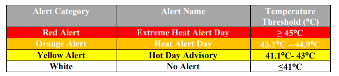
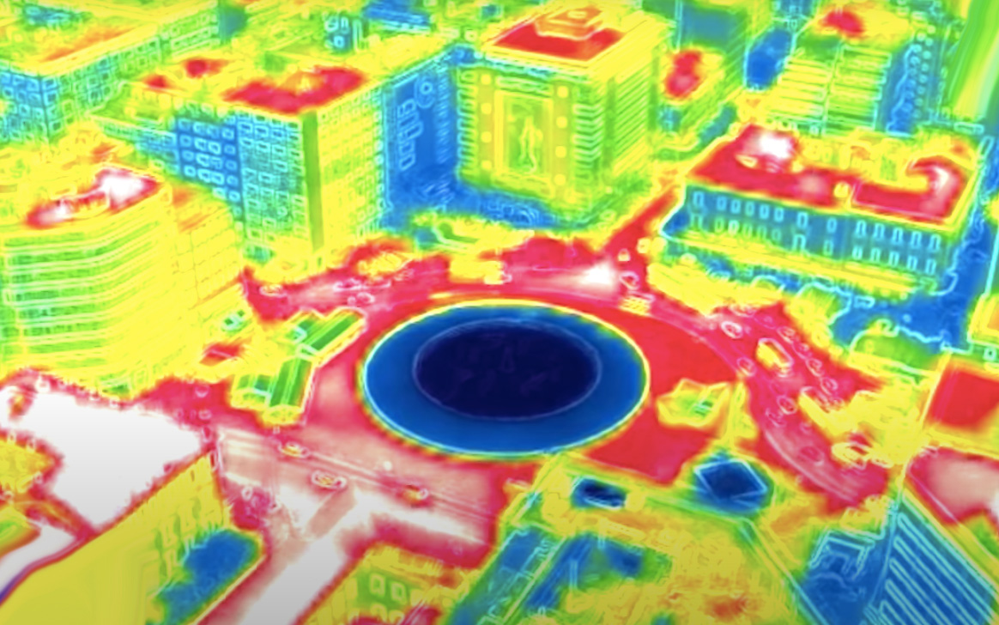
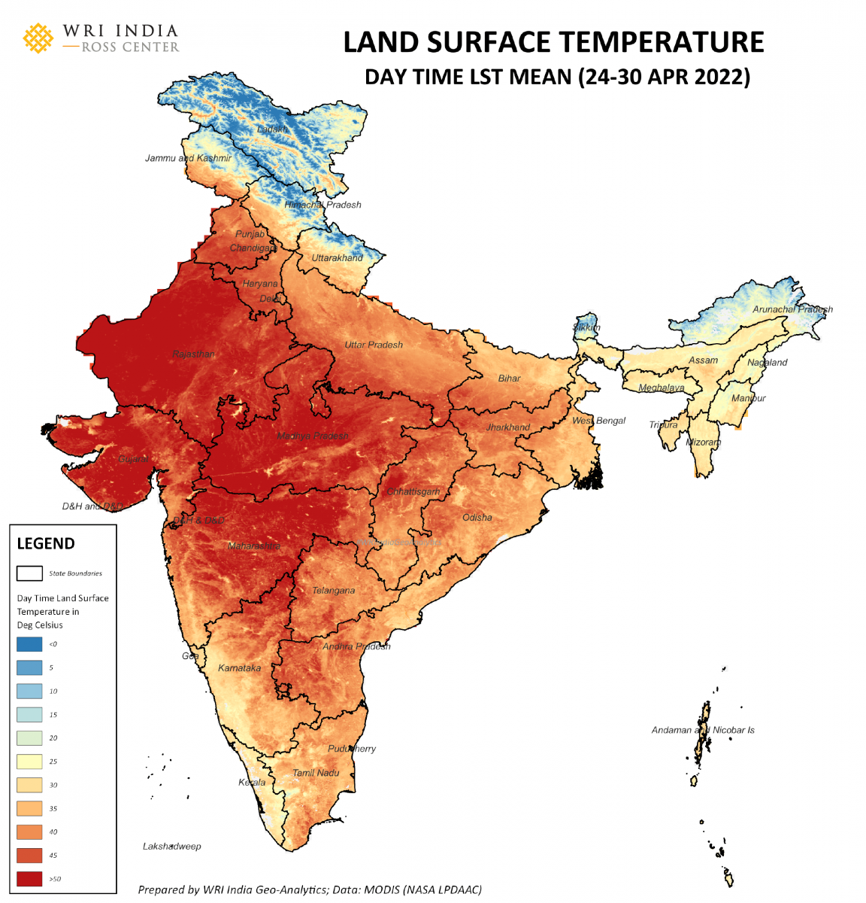
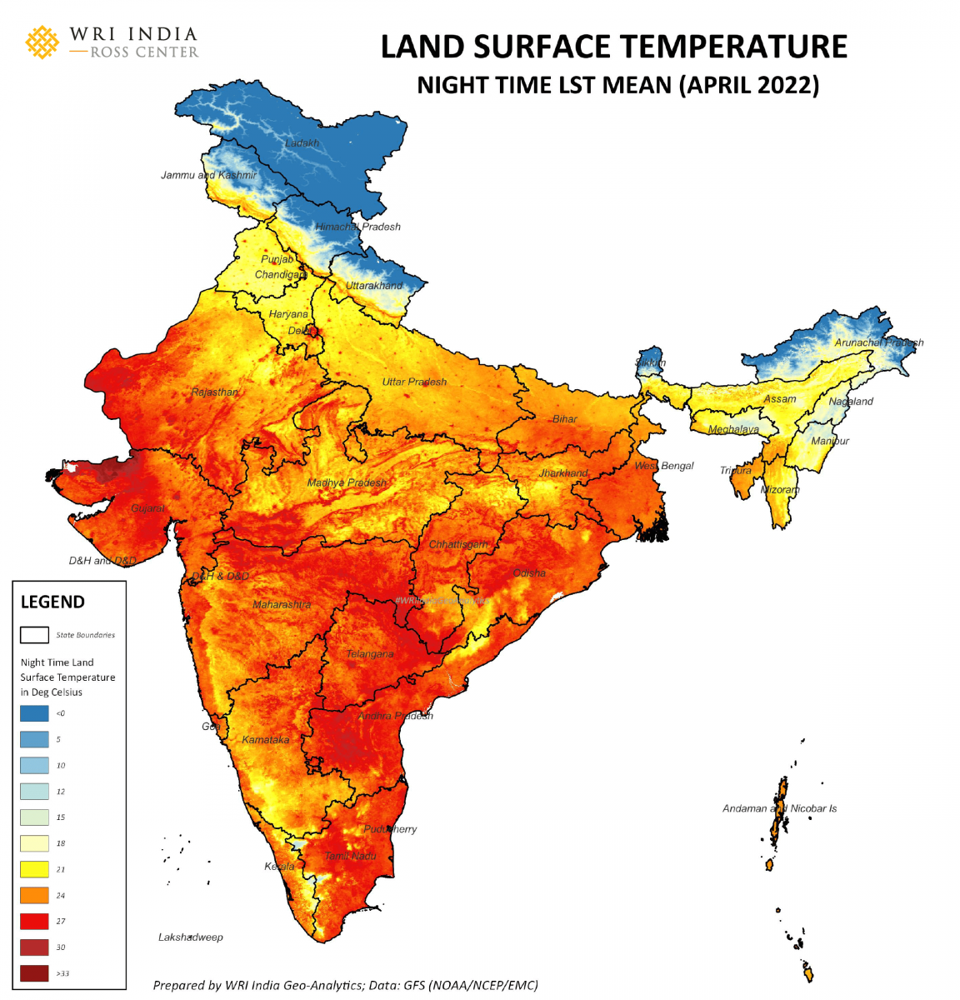
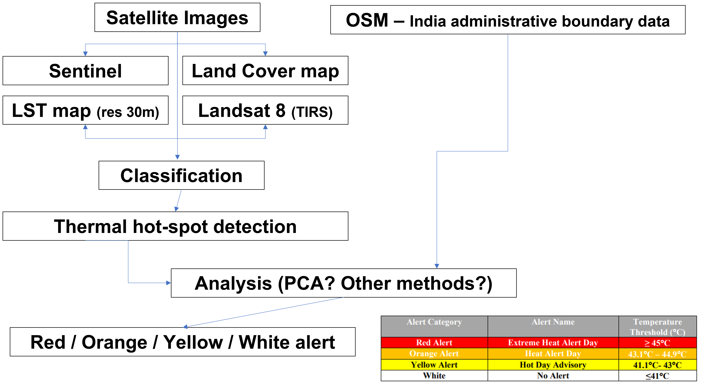

Heat wave and slums in Ahmedabad, India
CASA0075
1. Introduction of our topic
- by Atusmi
2. Heat wave (Temperature)
2.1. Climate
There are three main seasons: summer, monsoon, and winter
It is usually extremely dry except for the monsoon season.
Month The Average Maximum Temperature Nov - Feb 30°C / 86°F Mar - Jun 43°C / 109°F : hot 🔥
In May 2010, hundreds of casualties (over 1,344 people) in the worst-ever heat wave reached 46.8°C (116.2°F).
- the Ahmedabad Municipal Corporation (AMC) developed the Ahmedabad Heat Action Plan, in partnership with an international coalition of health and academic groups and with support from the Climate & Development Knowledge Network.
2.2. Ahmedabad Heat Action Plan
2.2.1. What is it for?
- Aimed at increasing awareness, sharing information and coordinating responses to reduce the health effects of heat on vulnerable populations. 🥵
The first comprehensive plan and early warning system in South Asia to address the threat of adverse heat on health.
It is evaluated and updated annually. 📆
2.2.2. How does it work? (Key plan)
- Focusing on community participation
- Building public awareness of the risks of extreme heat
- Training medical and community workers
- Coordinating an inter-agency emergency warning system
Important
Focus on two highly vulnerable population groups: slum communities and outdoor workers
2.2.3. Who does work with?
- It is informed by the Australian State of Victoria’s Heatwave Planning Guide for Local Councils. (Why?)
- The Indian Institute of Public Health- Gandhinagar
- The Indian Meteorological Service
- The US-based Natural Resources Defence Council
Young’s thought
I’d like to emphasize that this plan is internationally connected!
2.2.4. How do we analysis?
2.2.4.1. Thermal Infrared Sensors(TIRS) of Landsat 8

| Image colour | Structure | Radiant heat |
|---|---|---|
| Red | the steel panel roofs, asphalt roads | Higher than the surrounding area |
| Blue | green areas, rivers | Lower than other areas |
It produces images with data of infrared energy through digital or analogue image output functions.
Thermal imaging data + other administrative data (e.g. population, buildings, urban planning) = are used to cope with heat waves, such as the location selection of shelters, shade installation or sprinkler truck routes for vulnerable groups.
Compare this image with other images of same area in the past (recorded extreme temperature)
Young’s thought
- Need to add the specific formula for calculating images?
- Add the Sensor price?
2.2.4.2. Land Surface Temperature (LST)


the radiative skin temperature of the land derived from solar radiation
measures the emission of thermal radiance from the land surface where the incoming solar energy interacts with and heats the ground, or the surface of the canopy in vegetated areas (Source: Khan et al)
2.2.4.3. Urban Heat Island (UHI)
- using satellite and aircraft platforms and has provided new avenues for the observation of UHI
- OR BI, NDVI sensor?
Important
Analyse aviation data using PCA analysis and make a heat wave map!
2.2.5. A logical workflow of making a heatwave map

3. Poverty (Slums)
- by Yifei
4. Business perspective
- by Josiah
5. A project
- by Yi-Chien
Reference
- https://en.wikipedia.org/wiki/Ahmedabad#cite_note-109
- https://www.c40knowledgehub.org/s/article/Ahmedabad-Heat-Action-Plan-2019?language=en_US
- https://www.nature.com/articles/s41598-017-07956-5
- https://www.sciencedirect.com/science/article/pii/S0034425715302145
- https://www.mdpi.com/1660-4601/14/4/357
- https://www.researchgate.net/profile/Manat-Srivanit/publication/286451131_Assessing_the_Impact_of_Urbanization_on_Urban_Thermal_Environment_A_Case_Study_of_Bangkok_Metropolitan/links/566a337c08aea0892c49ec14/Assessing-the-Impact-of-Urbanization-on-Urban-Thermal-Environment-A-Case-Study-of-Bangkok-Metropolitan.pdf
- https://www.mdpi.com/2072-4292/11/20/2403
- https://www.mdpi.com/2072-4292/13/3/538